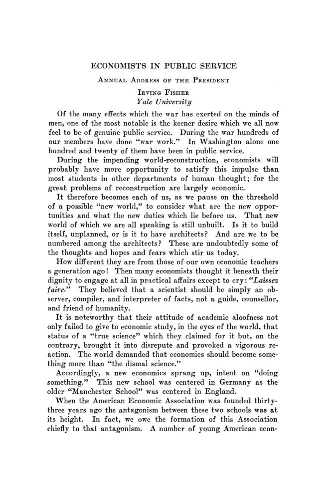

Fisher, 1918: a quem o economista deve servir?
Leitura: 7 min
No discurso presidencial de Richmond, Fisher pede que os economistas sirvam ao interesse geral, aponta a herança e o lucro como chaves da desigualdade e propõe educação econômica popular e um fundo de pesquisa.


Irving Fisher abre o discurso presidencial com um número: durante a guerra, só em Washington, 120 sócios da American Economic Association estiveram no serviço público. Centenas de outros fizeram “trabalho de guerra”. A reconstrução que se anunciava, diz, seria sobretudo econômica, e os economistas teriam mais oportunidade de servir do que os estudiosos de qualquer outro campo.
Fisher, de Yale, falou em Richmond na noite de 27 de dezembro de 1918. A pergunta que propõe é se o novo mundo de que todos falavam se construiria sozinho, sem plano, ou teria arquitetos, e se os economistas estariam entre eles.
Por que a associação nasceu dividida?
Fisher recorda a fundação da associação, 33 anos antes. Jovens economistas americanos, recém-chegados de estudos na Alemanha, queriam uma economia empenhada em “fazer alguma coisa”; os economistas mais velhos, fiéis ao laissez-faire, viam neles intrusos e propagandistas. Alguns, como seu mestre William Graham Sumner, nem entraram na associação. Daí o estatuto restritivo: a associação estimula a liberdade de discussão, não toma posição partidária e não compromete os sócios com posições práticas.
A guerra testou essa regra. Quando os Estados Unidos entraram no conflito, houve quem quisesse que a associação fizesse a sua parte, e a objeção foi o estatuto. Um ano antes do discurso, depois de muito debate, criou-se uma comissão sobre o poder de compra da moeda, e a comissão executiva nomeou outras, sobre finanças de guerra, comércio exterior, fixação de preços, comercialização e trabalho.
A quem o economista deve servir?
Fisher separa duas perguntas. A primeira é se o economista deve ficar na reclusão acadêmica ou buscar aplicações práticas; aqui, diz, os reformadores tinham razão, e a maioria ainda depende demais de livros e relatórios oficiais. A segunda é a quem servir, e nela os conservadores deram a melhor resposta: a economia pode servir ao mundo ou a um país, ao bem geral ou a um interesse comercial, uma classe, uma região.
No plano internacional, Fisher pede uma economia de reciprocidade e porta aberta, e não uma corrida por territórios, portos e tarifas discriminatórias na mesa da paz. Atribui a economistas alemães a serviço do Estado parte da base intelectual da guerra e defende a Liga das Nações também por razões econômicas: sem ela, a competição armamentista recomeçaria a partir de todo o equipamento acumulado na guerra.
No plano interno, o risco é o viés dos interesses especiais. O economista pode servir a um negócio legítimo, desde que às claras; o perigo é absorver sem perceber o ponto de vista do meio em que vive, seja Wall Street, seja uma região agrícola. Os economistas de um século antes escreviam do ponto de vista do patrão; muitos, agora, do ponto de vista do trabalhador. Fisher quer que a profissão guarde independência suficiente para ser árbitro em que os dois lados confiem.
Por que a herança e o lucro?
A distribuição da riqueza, diz Fisher, seria objeto de luta até um novo ajuste, e seu estudo científico mal começara. A teoria convencional da repartição entre renda, juros, salários e lucros pouco dizia sobre quem, de fato, tem o capital e a renda. Ele cita os números de Willford I. King, de Wisconsin.
Fisher vê duas chaves para essa distribuição. A primeira é a herança. Um ex-aluno, Albert G. Coyle, estimou que quatro quintos das mais de 150 fortunas americanas com renda acima de US$ 1 milhão por ano vinham se acumulando havia duas gerações ou mais. Fisher cita o juiz inglês Coleridge e o juiz McKenna, da Suprema Corte americana, para quem o direito de herdar é criação da lei, não direito natural, e cita a proposta do italiano Rignano de tornar o Estado coerdeiro: um terço na primeira transmissão, dois terços do resto na segunda e o saldo na terceira.
A segunda chave é o lucro, a parte incerta da renda que sobra depois de renda da terra, juros e salários. Lucros respondem, diz, por mais de um quarto da renda nacional, mais do que renda da terra e juros somados, e todo milionário que se fez sozinho, diz, enriqueceu sobretudo por eles. Fisher não propõe limitar o lucro a uma “taxa justa de juros”: quem assume o risco da perda tem direito à chance do ganho.
“Minha crítica não é aos jogadores, mas às regras.” (“My criticism is not of the players, but of the rules.”)
Que papel caberia ao governo?
A sugestão de Fisher é que trabalhadores e público participem dos riscos e da gestão das empresas, hoje concentrados no empresário. Lista formas mistas que já existiam: regulação, arrendamentos com reversão ao poder público, subsídios, fixação e garantia de preços e impostos sobre lucros extraordinários. O governo, diz, está em melhor posição para subscrever grandes empreendimentos, porque seus ganhos e perdas em várias direções se compensam; seria uma forma de seguro social.
A guerra serviu de exemplo. O governo garantiu o preço do trigo ao agricultor, assegurou lucros mínimos às ferrovias que assumiu, tomou para si a maior parte dos riscos da construção naval e criou um fundo rotativo para indústrias essenciais. Fez tudo isso de modo desajeitado, diz Fisher, mas teve de fazê-lo porque a iniciativa privada falhou ou não era confiável.
“Ou a plutocracia comprará a democracia, ou a democracia votará o fim da plutocracia.” (“Either the plutocracy will buy up the democracy or the democracy will vote away the plutocracy.”)
O que a guerra ensinou sobre motivação?
Mesmo com distribuição ideal, diz Fisher, haveria descontentamento, porque o trabalho industrial ignora leis psicológicas. Homens apáticos na fábrica lutaram com entusiasmo quase sem soldo, e esse moral encolheu da noite para o dia com o armistício. Ele cita Robert B. Wolf, que falou na mesma reunião, e o falecido Carleton Parker, e menciona os 275 diplomados de cursos do War Industries Board para gerentes de pessoal.
Que instituições Fisher propunha?
Fisher fecha com duas propostas. A primeira é uma organização para difundir princípios de economia entre a massa da população, que forma a opinião numa democracia e age, diz, sob ilusões como a de que limitar a produção cria trabalho. A segunda é uma dotação para pesquisa econômica, gerida em conjunto por trabalho, capital e economistas, uma espécie de laboratório para estudar a distribuição da riqueza, o lucro e a agitação operária, protegido de controle partidário.
“Hoje nós, os homens das faculdades, estamos, em certo sentido, ensinando as pessoas erradas.” (“At present we college men are, in a sense, teaching the wrong people.”)
Na minha leitura
Na minha leitura, o discurso de Fisher é sobretudo sobre o problema do principal e do agente na própria profissão. Ele não pergunta só o que o economista sabe, mas para quem trabalha e que viés absorve do ambiente, e propõe uma resposta institucional: financiamento de pesquisa com governança dividida entre partes de interesses opostos.
No conteúdo, a separação entre a origem da riqueza herdada e a da riqueza feita numa geração organiza o argumento. Para a primeira, a ferramenta é a regra de sucessão; para a segunda, a repartição do risco. Ao defender que quem assume a perda tem direito ao ganho, Fisher trata o lucro como prêmio de risco e muda a pergunta de quanto lucrar para quem carrega o risco.
Glossário
- Sistema de lucros
- nos termos de Fisher, o arranjo em que o empresário assume sozinho o risco e a gestão e fica com o resultado incerto.
- Coerdeiro estatal
- proposta de Rignano de dar ao Estado parcelas crescentes de uma herança a cada nova transmissão.
- Seguro social
- repartição de riscos entre empregador, empregado e Estado, como na indenização por acidentes.
Fontes
- Economists in Public Service: Annual Address of the President — Irving Fisher, Yale University; discurso presidencial (pp. 5–21). JSTOR · Internet Archive (PDF)
- Edição completa, com os demais artigos: Nº 156 do Arquivo.
Documento em domínio público (EUA, publicado antes de 1931), via JSTOR Early Journal Content e Internet Archive. Resumo e comentário do autor deste site, sem afiliação com a American Economic Association. Encontrou um erro? Escreva: a correção é publicada no próprio texto, com data.
↑ Nº 156 · Richmond, 1918: economistas no serviço público e a reconstrução Hamilton, 1918: a economia institucional pede o nome de teoria →